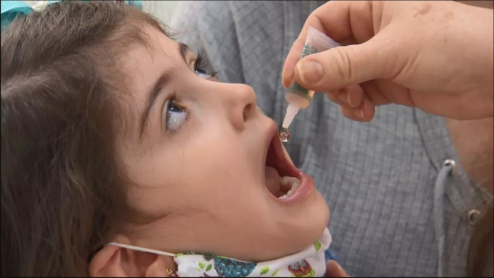

O impacto dos testes em animais feitos pelas indústrias de cosméticos
O impacto dos testes em animais feitos pelas indústrias de cosméticosCASOS DE POLIOMIELITE VOLTAM A ASSOLAR O MUNDO
DOENÇA ERRADICADA NA MAIOR PARTE DO MUNDO VOLTA A PREOCUPAR.
A poliomielite é uma doença conhecida desde a antiguidade, porém foi somente no final do século XIX que a doença paralítica foi reconhecida como um problema significante, quando as epidemias começaram a aparecer no norte da Europa. Sendo que, os primeiros relatos de casos de poliomielite no Brasil foram feitos no início de 1911, em São Paulo.
Entretanto, o último caso de poliomielite foi observado na cidade de Sousa, na Paraíba, em 1989. Na qual, a doença é considerada oficialmente eliminada do território nacional há 27 anos, desde 1994.
NO BRASIL, A TAXA DE IMUNIZADOS CONTRA A PÓLIO CAIU CONSIDERAVELMENTE DE 2015 PARA CÁ.
No entanto, o Departamento de Saúde do Estado de Nova York, nos Estados Unidos, informou no dia 07 de Julho de 2022, a detecção de um caso de poliomielite no Condado de Rockland, no subúrbio da cidade. Este é o primeiro caso registrado da doença em quase dez anos. Em Londres, cerca de 1 milhão de crianças receberão uma dose extra da vacina contra a poliomielite, após a descoberta de poliovírus no esgoto da capital britânica.
A Poliomielite é uma doença contagiosa aguda causada pelo "poliovírus selvagem" (PVS) que pode infectar crianças e adultos por meio do contato direto com fezes ou com secreções eliminadas pela boca das pessoas doentes. Ela pode atacar o sistema nervoso e, em poucas horas, deixar alguém paralisado. Quando paralisa os músculos do peito, a pessoa não consegue respirar. Assim, o pulmão de ferro semelhante a um sarcófago já foi uma visão comum nas enfermarias de pólio no passado.
Paciente com 'pulmões de aço' - foto: getty images via bbc Graças a vacinação, 20 milhões de pessoas que hoje podem andar estariam paralisadas, estima a OMS